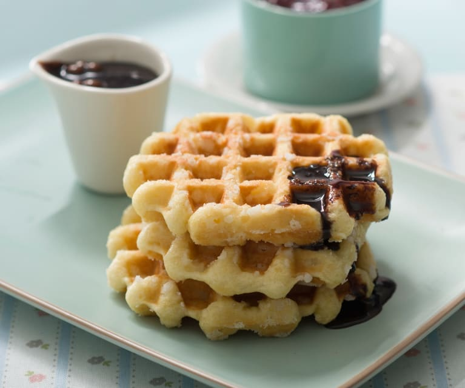

Receta de gofres

- Tiempo aproximado: 45 minutos
- Comensales: 5 (dependiendo del tamaño de la gofrera)
Ingredientes:
| Ingredientes |
Cantidad |
| Harina de trigo |
250 gramos |
| Leche entera |
400 mililitros |
| Aceite |
100 mililitros |
| Levadura |
Un sobrecito |
| Huevos |
3 |
| Sirope |
|
| Nata para montar |
200 mililitros |
Es necesario tmabién contar con una gofrera
Preparación:
- Mezclar todos los ingredientes con ayuda de la batidora
- Verter parte de la mezcla en la gofrera, hasta cubrir su superficie
- Esperar de cinco a siete minutos (dependiendo de la marca de la gofrera)
Mientrás se van haciendo los gofres, montar la nata